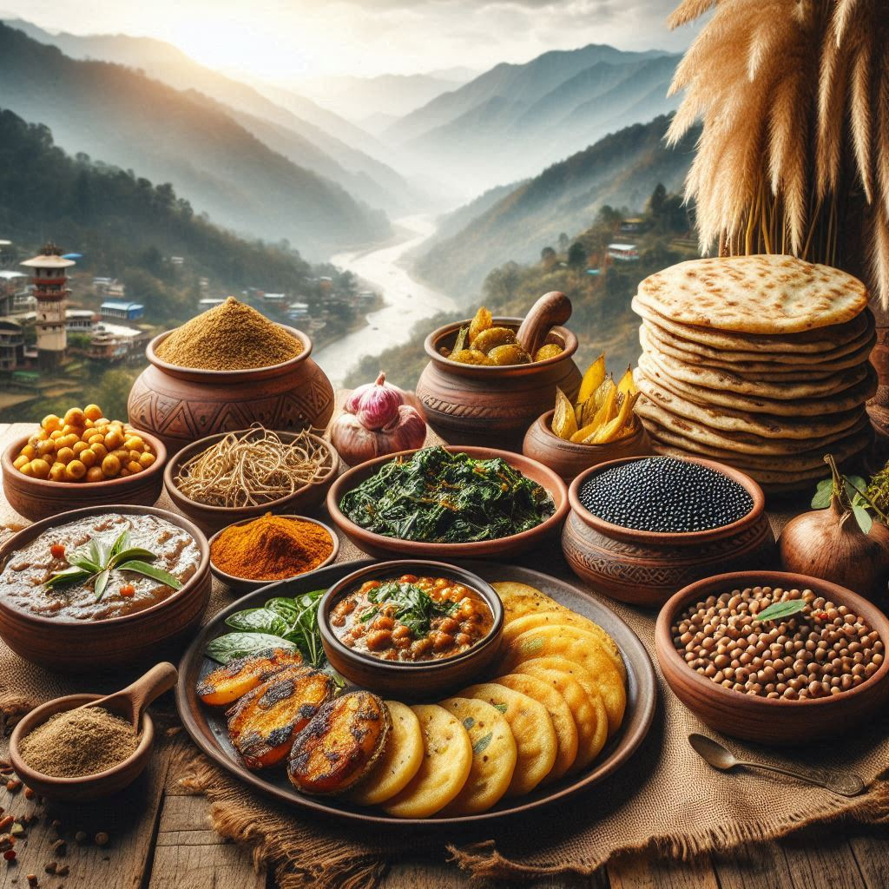
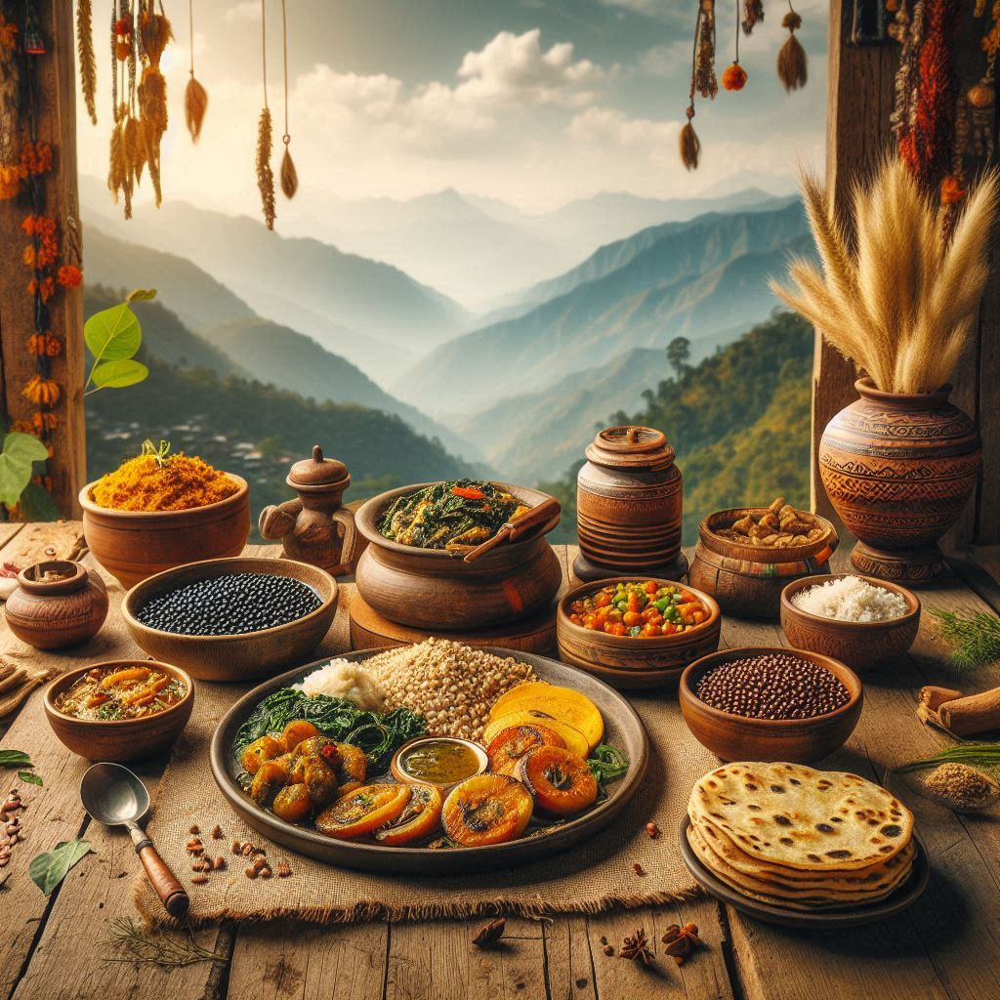

The cuisine of Uttarakhand is simple, wholesome, and reflects the state's natural bounty and cultural traditions. The food in Uttarakhand is largely influenced by the local agricultural practices, the geography, and the way of life in the hilly regions. Here's a detailed look at the food culture of Uttarakhand:
1. Staples of Uttarakhand Cuisine
- Rice (Chawal): Rice is the staple food of the state, especially in the Kumaon and Garhwal regions. It is often served with dal (lentils), vegetables, and curd.
- Mandua (Finger Millet): Mandua is a traditional grain widely used in Uttarakhand. It is used to make mandua roti (flatbreads) and is often consumed during the winter months due to its warming properties.
- Wheat Flour: In addition to rice, wheat is used to prepare rotis (flatbreads), parathas, and other types of bread.
2. Popular Dishes
- Aloo Ke Gutke: A spicy potato dish from the Garhwal region, made with boiled potatoes sautéed in mustard oil and seasoned with local spices. It is a favorite in many households and is typically served with mandua roti or rice.
- Kafuli: A famous dish of Uttarakhand, kafuli is a thick curry made from leafy green vegetables like spinach and fenugreek, cooked in a yogurt-based sauce. It is typically served with rice.
- Chainsoo: A flavorful dish made from roasted black gram (urad dal) that is cooked with onions, tomatoes, and spices. It is often served with rice or rotis and is a comforting dish in rural homes.
- Bhaat (Rice) with Ghee and Jhol (Gravy): A simple but delicious meal where rice is served with a thin, mildly spicy curry (jhol) made from vegetables, meat, or lentils.
- Gheeya (Bottle Gourd) Ki Sabzi: A vegetable curry made from bottle gourd, cooked with spices and typically paired with roti or rice.
- Phanu: A special dish of Kumaon made from rice and lentils. The ingredients are steamed together to create a thick, flavorful dish.
- Raita: Curd mixed with vegetables or fruits like cucumber, apple, and pomegranate, providing a cooling and refreshing side dish.
3. Sweets and Desserts
- Bal Mithai: One of the most famous sweets of Uttarakhand, bal mithai is a fudge made from roasted khoya (reduced milk) and sugar, coated with white sugar balls. It's a signature dessert of the Kumaon region.
- Singhori: A traditional sweet made of khoya wrapped in a thin pastry dough, often flavored with cardamom. It is typically served during festivals and special occasions.
- Jhangora Ki Kheer: A sweet pudding made from jhangora (barnyard millet), milk, sugar, and dry fruits. It's a traditional dessert often enjoyed during festivals.
- Arsa: A rice flour-based sweet dish, similar to a doughnut, made with jaggery and deep-fried in ghee. It’s typically prepared during weddings and festivals.
4. Snacks and Street Food
- Swaad: These are small, crispy fried snacks made from rice flour and lentils, often served as a light snack or appetizer during tea time.
- Aloo Ke Parathe: Stuffed flatbreads made with boiled spiced potatoes, usually served with yogurt, chutney, or pickle.
- Kachori: Deep-fried pastries stuffed with spicy filling (often lentils or potatoes) that are served with chutney. It is a popular street food in cities like Dehradun.


5. Drinks
- Chai (Tea): Tea is an essential part of daily life in Uttarakhand, and it is often prepared with spices like cardamom, ginger, and cloves, especially during the colder months.
- Jungli Juice: A traditional drink made from wild fruits such as bael (wood apple), amla (Indian gooseberry), or sugarcane. It's a refreshing drink commonly found in rural areas.
- Rasa: A fermented drink made from rice and consumed as an appetizer or during festivals. It is somewhat similar to a rice beer and is often homemade.
6. Influence of Geography
- Mountain Cuisine: The food culture of Uttarakhand is influenced by its mountainous terrain. The people of the region traditionally rely on locally grown grains and vegetables, as well as natural resources like wild herbs and mushrooms.
- Lesser Use of Spices: Uttarakhandi cuisine tends to use milder spices compared to other parts of India. The focus is on preserving the natural flavor of the ingredients, with mustard oil and ghee being the primary cooking mediums.
7. Special Dishes for Festivals
- Bheti: A traditional meal during festivals, bheti consists of simple but flavorful food like rice, dal, vegetables, and mitha (sweet rice), often offered to guests.
- Pahadi Baida Roti: A type of millet flatbread served during special occasions, especially in the Garhwal region.
Conclusion
The food of Uttarakhand is deeply connected to the region’s agricultural practices and mountainous lifestyle. It is simple yet full of flavors, with an emphasis on using locally available ingredients like mandua, rice, lentils, and greens. Whether it’s the rich curries of the Garhwal region, the sweet treats of Kumaon, or the comforting rice and dal, Uttarakhandi cuisine offers a unique and satisfying experience for food lovers.